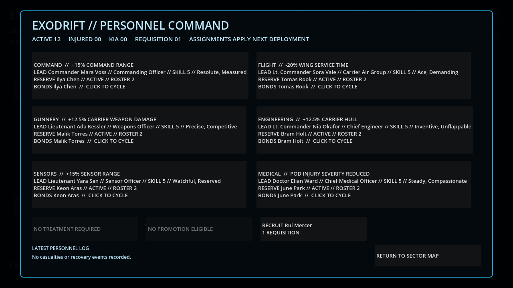
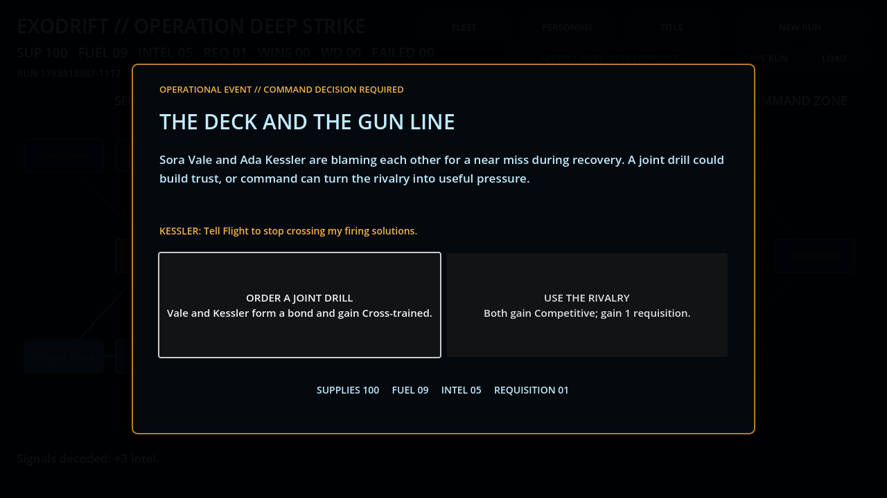
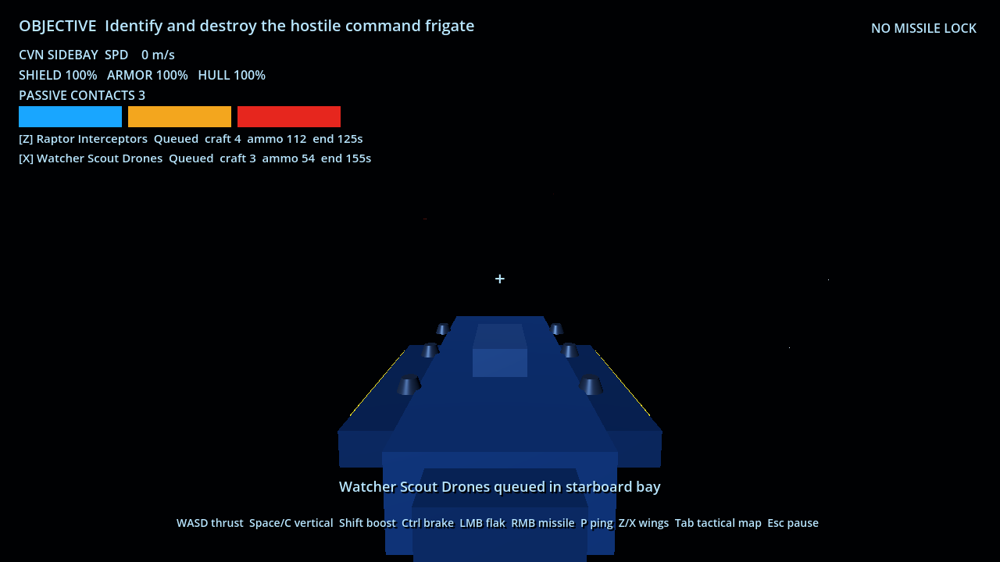
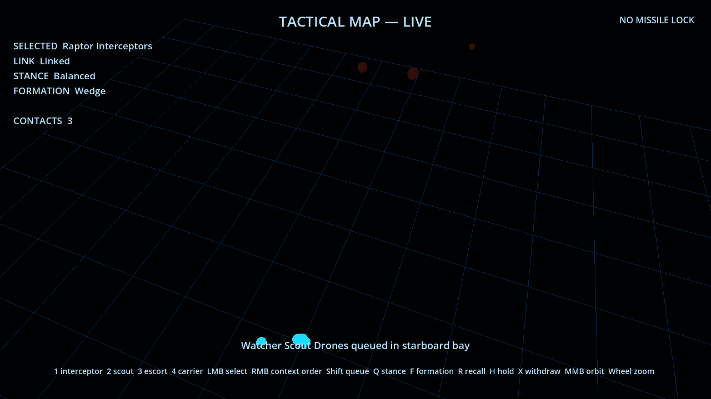
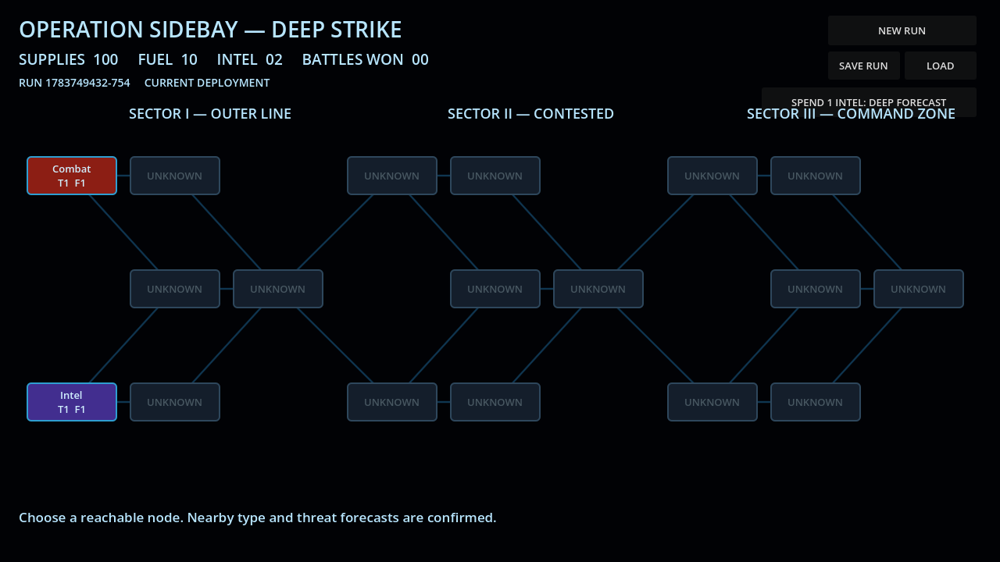
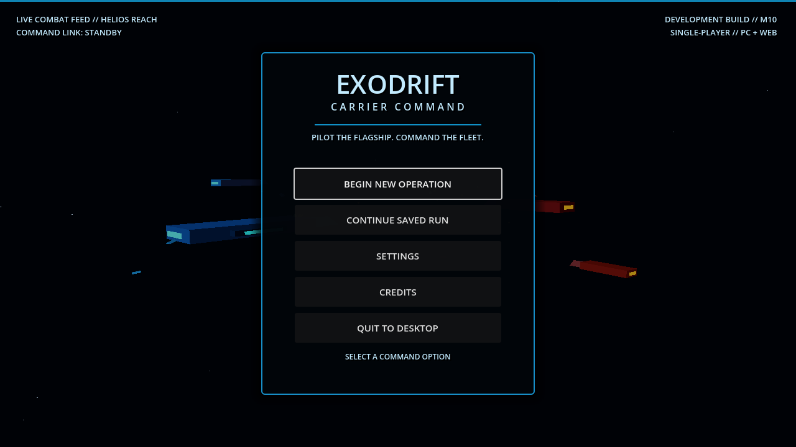

01
Fly the flagship
Command a 120-meter carrier with heavy inertia, braking assist, camera orbit, bounded vertical battlespace, flak, strike missiles, automated defenses, and layered durability.
Tactical carrier action-RTS
Carrier Command
Pilot the flagship. Command the fleet.
Survive the deep strike.
Command doctrine
Take the helm of a heavy carrier while issuing orders to persistent wings and capital escorts. Fight command strikes, interceptions, defenses, escorts, captures, and extractions in one uninterrupted battlespace.
Command a 120-meter carrier with heavy inertia, braking assist, camera orbit, bounded vertical battlespace, flak, strike missiles, automated defenses, and layered durability.
Open a live holographic map without pausing. Queue moves, attacks, intercepts, escorts, recalls, stances, and formations while your carrier holds course.
Launch fighters and drones through mirrored side bays. Manage ammunition and endurance, protect recovery lanes, service survivors, and relaunch.
Fleet archive
Ships are authored tactical sidegrades—not randomized-stat loot. Each hull has a readable role, silhouette, and place in the command network.
Heavy Carrier
Player-piloted mobile base with mirrored launch galleries, command systems, flak batteries, and strike missiles.
Missile Frigate
A commandable capital escort that screens the carrier and delivers deliberate long-range missile pressure.
Interceptor Squadron
Four fast interceptors built to break hostile fighter screens and protect the carrier’s recovery pattern.
Scout Drone Squadron
Three sensor drones that resolve uncertain contacts without forcing the carrier to reveal itself with an active ping.
The human cost of command
Twelve initial officers serve across Command, Flight, Gunnery, Engineering, Sensors, and Medical. Choose department leads, fund treatment, earn promotions, recruit authored specialists, unlock rare officers, and resolve operational events whose relationships and losses persist.


Unfiltered combat feed
No pre-rendered gameplay. These captures come directly from the current Godot greybox running at 1080p.




Development transmission
Flight, weapons, side bays, squadrons, live tactical command, sensors, AI, and win/loss flow.
Branching route, supplies, fuel, intel, forecasts, combat nodes, manual saves, and browser distribution.
Battle damage, surviving craft, ammunition, fleet service, module slots, and authored sidegrade unlocks.
Command strikes, interception battles, extraction corridors, emergency withdrawal, and reduced-reward partial victories.
Defense, escort, capture, pursuit, escape pods, jump stragglers, after-action rescue, salvage, and persistent losses.
A centered command menu over a continuously simulated carrier battle, with Continue, settings, credits, and campaign transitions.
Twelve officers, six departments, tactical assignments, injuries, bonds, rescue outcomes, succession, and permanent death.
Treatment, promotions, relationship events, radio barks, requisition pools, and rare authored officer unlocks.
Authored escort requisition, replacement hull choices, hangar complements, salvage allocation, and deeper logistics.
Command link established
Launch the browser build or clone the Godot project and join development from the source of truth.
More from Risxhb Games
EXODRIFT is the flagship project, but the existing browser games remain playable from the same home port.